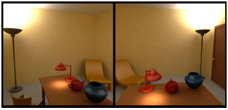
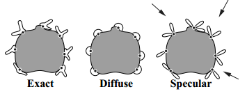

The paper describes a technique using a simple shading method, to create virtual light and approximate the appearence of objects according to the lights.

The above picture shows an environment containing a teapot using virtual lights.

The above picture shows directional light patterns at selected vertices on an object.
Here, we are using a shading model called 'phong model'. This technique can translate view-independent non-diffuse global illumination solutions into a form that is more compact, portable and suitable for fast display.